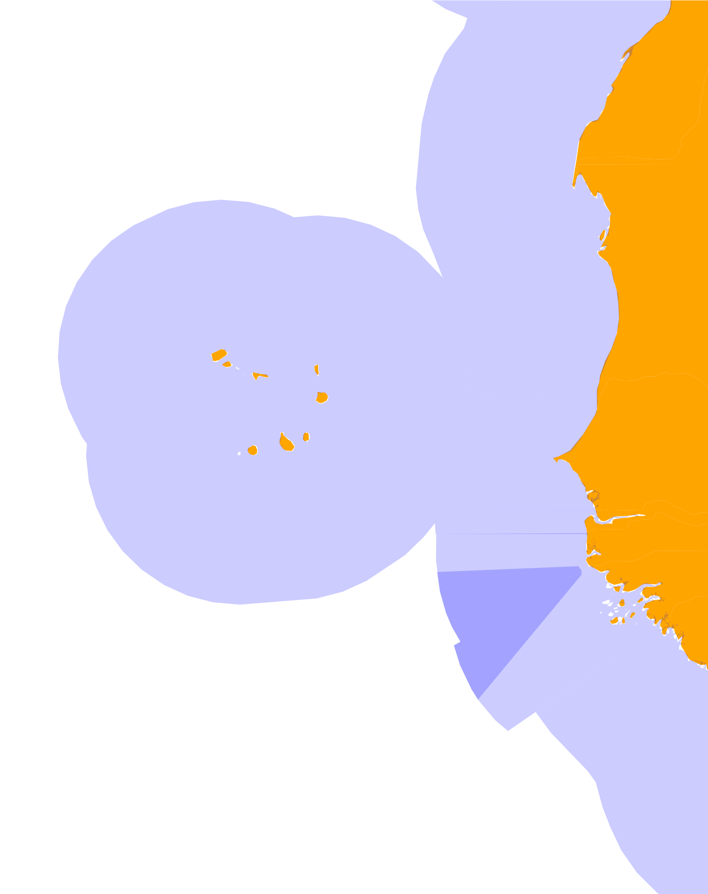
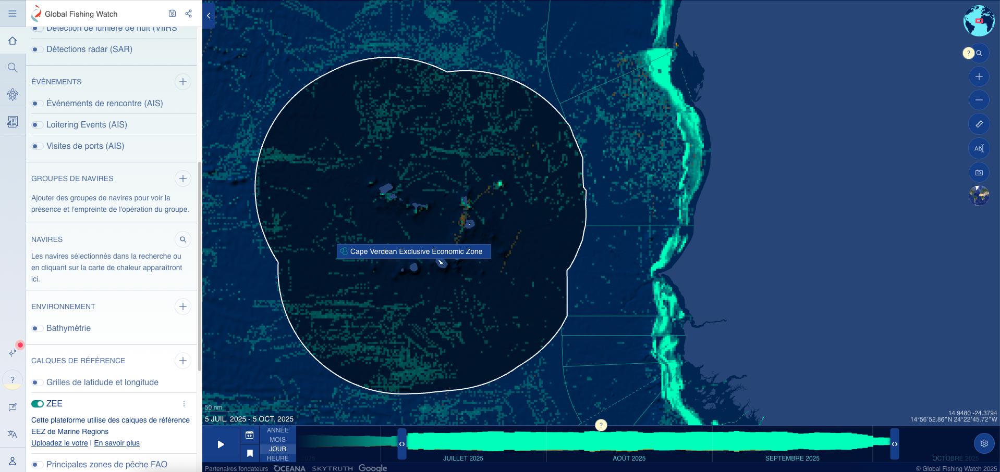
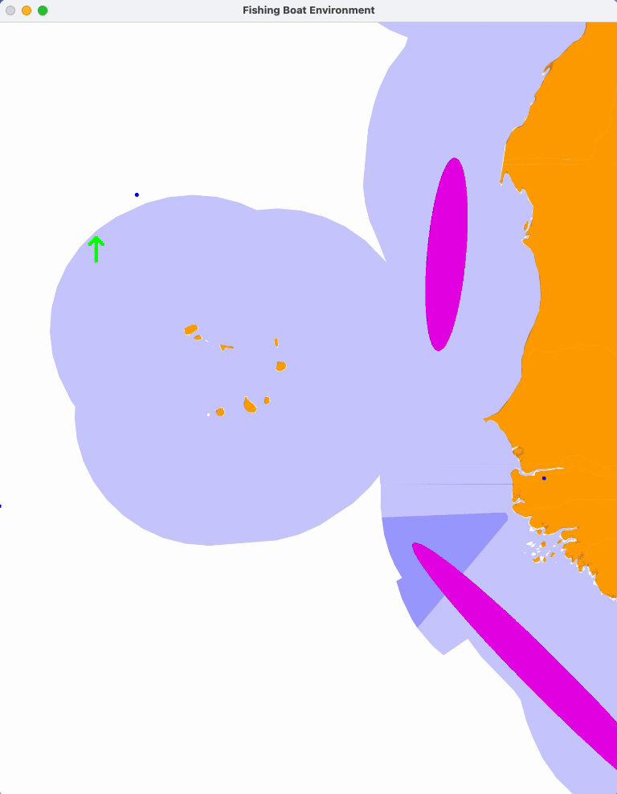
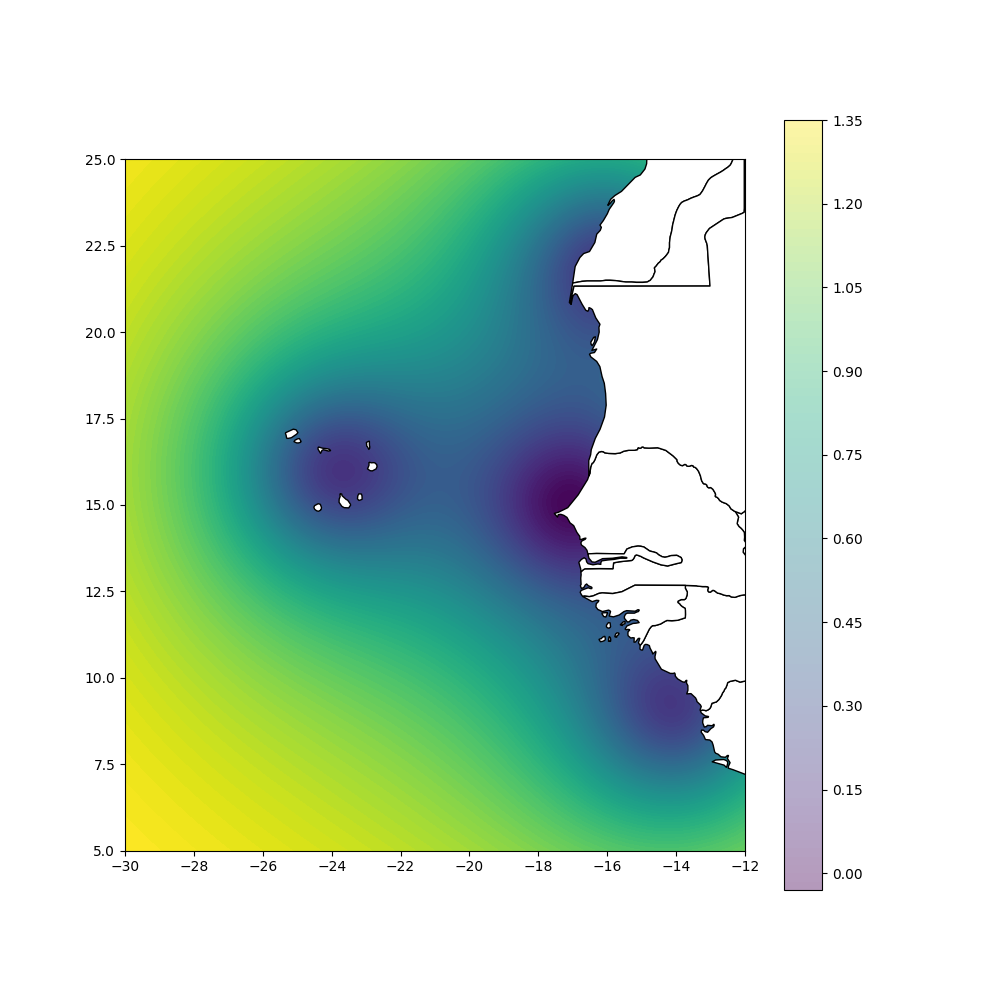
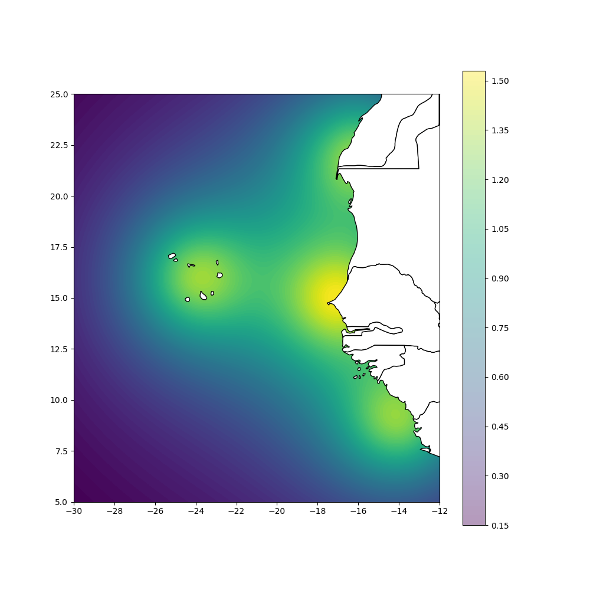
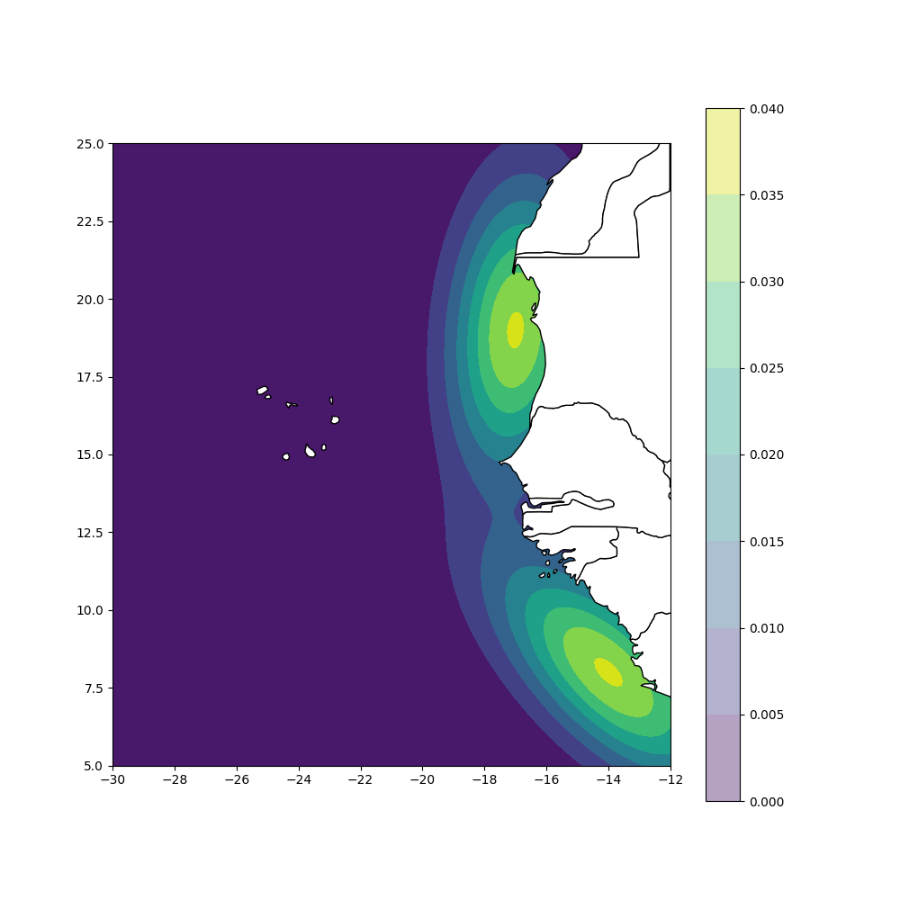

Fishing boats in Senegal’s EEZ: reinforcement learning for anomaly detection#
A demonstrator built for Geomatys, a geo-data-science company, during a 2-month feasibility study on multi-agent reinforcement learning (2024).
In short: real examples of illegal fishing are too rare to train a detector on. I built a small Gymnasium simulator of the Dakar Exclusive Economic Zone (EEZ), shaped a reward so that an RL agent behaves like a vessel that fishes illegally and hides it, and used the trained policy to score how likely real AIS tracks are under that behaviour.
Context#
Illegal, unreported and unregulated (IUU) fishing is a major problem for coastal countries such as Senegal. Vessels broadcast their position, speed and heading through AIS (Automatic Identification System), which in principle makes them easy to monitor. In practice, boats switch their AIS beacon off and on, and there are legitimate reasons to do so, so a dark period alone proves nothing.
Machine learning is a natural tool to find suspicious vessels among millions of AIS messages, but labelled examples of confirmed illegal behaviour are scarce. The client’s question was whether reinforcement learning could help.
The approach studied here turns the problem around. Reinforcement learning is usually used to find an optimal strategy, not to imitate existing behaviour. If we write down what an illegal fisher wants (reach rich fishing grounds inside the EEZ, avoid being seen there), an RL agent will find a strategy that achieves it. That policy can then be used in two ways:
generate synthetic “rogue” trajectories to enrich training databases;
score real trajectories: a track that the policy finds likely looks like illegal fishing.
The environment#
The simulator is a custom Gymnasium environment. The boat uses the same quantities as an AIS message: latitude, longitude, speed and heading.
Observation: latitude, longitude, the value of the map at the boat’s position, and AIS status.
Action: speed, heading, and AIS ON/OFF.
The boat starts at a random position at sea, its speed is integrated with a time step of about one hour, and observations carry a few percent of noise. This is deliberately simple: bathymetry, weather or more realistic noise could be added later.
Real geography. Land and EEZ boundaries come from Marine Regions GeoJSON files (land in orange, EEZs in blue):


Fig. 1 Land (orange) and exclusive economic zones (blue).#
Real vessels. Fishing-effort maps and vessel tracks come from Global Fishing Watch. Tracks of vessels flagged as potential illegal fishers in the EEZ are replayed in the simulator as blue dots, and the fishing-effort map was used to place the fishing areas.


Fig. 2 Fishing effort off Senegal (Global Fishing Watch).#
Putting everything together, here is the environment driven by hand with the keyboard:


Fig. 3 The environment driven by hand with the keyboard.#
blue: EEZ; orange: land; pink: fishing areas;
blue dots: replayed real vessels;
arrow: our boat and its heading, green when AIS is ON, red when it is OFF.
Reward design#
The reward encodes what an illegal fisher wants. It is a weighted sum of six terms:
Term |
Expression |
Purpose |
|---|---|---|
heading |
\(-0.5\,\lvert\theta_t - \theta_{t-1}\rvert\) |
penalise sudden changes of direction |
speed |
\(10^{-4}\,v^2\) |
favour moving rather than drifting |
EEZ guidance |
\(c - d_{\text{EEZ}}\) |
pull the boat toward the EEZ |
AIS |
\(-\text{AIS}_{\text{ON}}\,\text{in}_{\text{EEZ}} + \text{AIS}_{\text{ON}}\,(1-\text{in}_{\text{EEZ}})\) |
AIS OFF inside the EEZ, ON outside |
hovering |
\(-\text{AIS}_{\text{ON}}\,(1-\text{in}_{\text{EEZ}})\,\min(\Delta d_{\text{EEZ}}, 0)\) |
approach the EEZ border with AIS ON |
fishing |
\(r \sim \mathcal{N}\!\left(m, (m/2)^2\right)\), \(m\) = fishing-map value |
stay in fishing areas |
total_reward = (
0.2 * heading_reward
+ speed_reward
+ 0.5 * eez_guidance_reward
+ 12 * fishing_reward
+ 0.2 * ais_reward
+ 10 * hovering_reward
)
The weights are qualitative: they reflect the relative importance of each objective and were tuned by looking at the resulting behaviour.
EEZ guidance. A pseudo-distance to the EEZ is precomputed on the map (built from discs around the boundary), and the reward is a constant minus that distance:


Fig. 4 Pseudo-distance to the EEZ.#


Fig. 5 Resulting EEZ guidance reward.#
Fishing. The attraction to fishing grounds is stochastic: the reward is drawn from a normal distribution centred on the value of this map, so richer areas pay more on average without being perfectly predictable:


Fig. 6 Fishing areas: richer zones pay more on average.#
Hovering. Press reports describe vessels waiting near the EEZ border with AIS ON before slipping in dark. The hovering term rewards getting closer to the EEZ with AIS ON, and is zero when the boat moves away (otherwise the agent would be paid for leaving).
The final environment does not use the elliptic fishing areas mentioned in the study report. Other terms, such as avoiding neighbouring vessels, are implemented but switched off.
Training#
The agent is trained with Stable-Baselines3. It is a SAC (Soft Actor-Critic) model, which suits the continuous action space.
from stable_baselines3 import SAC
model = SAC("MlpPolicy", env, verbose=1, tensorboard_log="models/tensorboard_log/")
model.learn(total_timesteps=500_000)
model.save("models/sac_fishing_agent")
Training curves can be followed in TensorBoard (tensorboard --logdir models/tensorboard_log).
Learned behaviour#
After training, the agent shows the behaviours the reward was designed for:
it heads for the fishing areas;
it switches its AIS OFF inside the EEZ and ON outside;
it hovers along the EEZ border before entering.
It also shows the limits of reward shaping: where two terms conflict, near some zones, the boat can behave in ways no real vessel would.
From policy to anomaly detection#
A stochastic policy \(\pi(a \mid o)\) gives a probability for any action in any situation. Real AIS tracks can be converted into sequences of (observation, action) pairs in the same format as the simulator, and each step scored by the trained policy:
from torch.distributions import Normal
mean, log_std, _ = model.policy.actor.get_action_dist_params(observations)
log_probs = Normal(mean, log_std.exp()).log_prob(actions).sum(dim=-1) # one value per AIS step
track_score = log_probs.mean() # how "rogue-like" the whole track is
A track with a high likelihood behaves like the illegal fisher the agent learned to be and deserves a closer look. A low likelihood means the vessel does not follow that strategy, or that the policy is overfitted to the simulator: the score is a ranking signal for analysts, not a verdict.
Limits and next steps#
This demonstrator was built during a 2-month feasibility study, and it should be read as a proof of concept:
Simple physics and observations: no bathymetry, weather, currents or realistic sensor noise.
Hand-tuned reward: the behaviour is only as good as the assumptions written into the reward; inverse RL on real tracks could learn it instead.
Single agent: the client’s target was multi-agent RL (several vessels, patrols reacting to them); the environment is a starting point for that.
No ground-truth evaluation: scoring would need to be validated against confirmed IUU cases before being used operationally.
The study’s conclusion for the client was that RL is a credible way to generate synthetic rogue behaviour and a probabilistic score for real tracks, provided the simulator is enriched and the scores are validated on labelled cases.